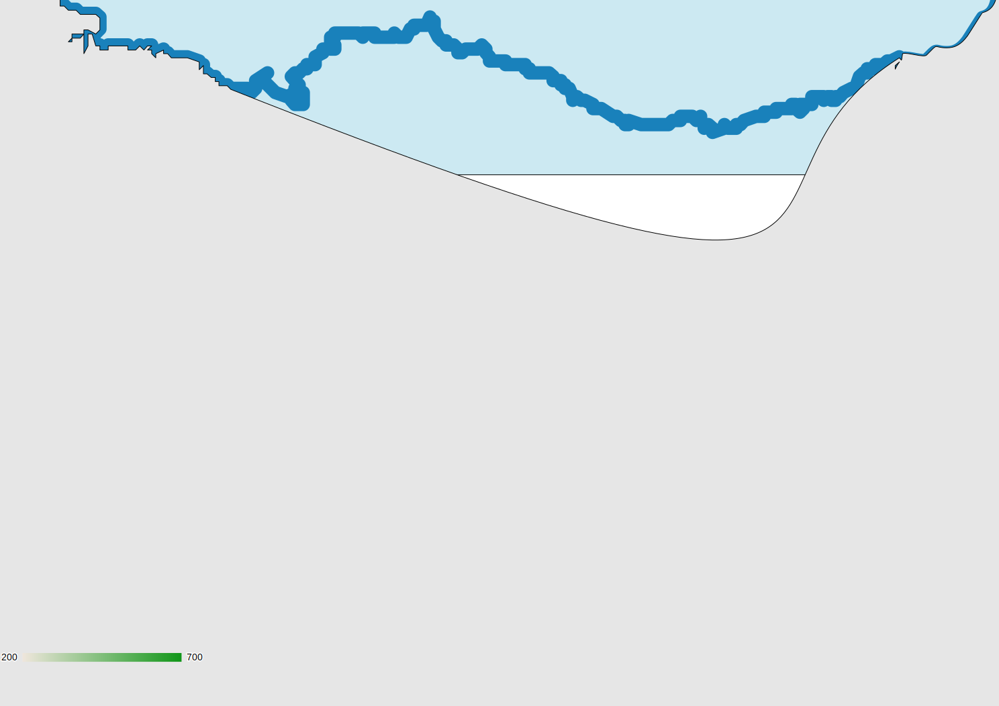

<html>
  <head>
    <title>Sample Euskadi GeoChart</title>
    <meta content="">
    <script src="js/euskadi_gc.js"></script>
    <script src="http://code.jquery.com/jquery-2.1.0.min.js"></script>
    <script>
      $(document).ready(function(){
	$("#svgmap").html("<p>Loading content...</p>");
	var options = { 'title':'Euskadi',
			//'width':650,
			//'height':400,
			'region':'ES-PV',
			'resolution':'provinces', // 'municipality', 'comarcas', 'provinces'
			'labels':false
	};
	loadMap(options);
      });
    </script>
    
    <style></style>
  </head>
  <body>
  <div id="svgmap" />
  <!--<object data="images/euskadi.svg" id="svgembed"></object>-->
  <!---->
  </body>
</html>